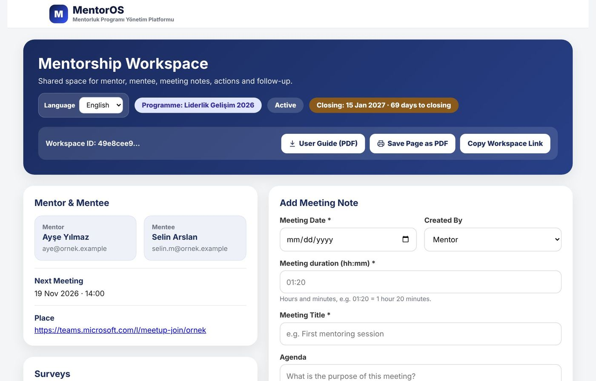
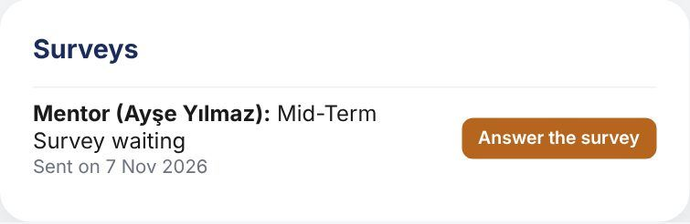
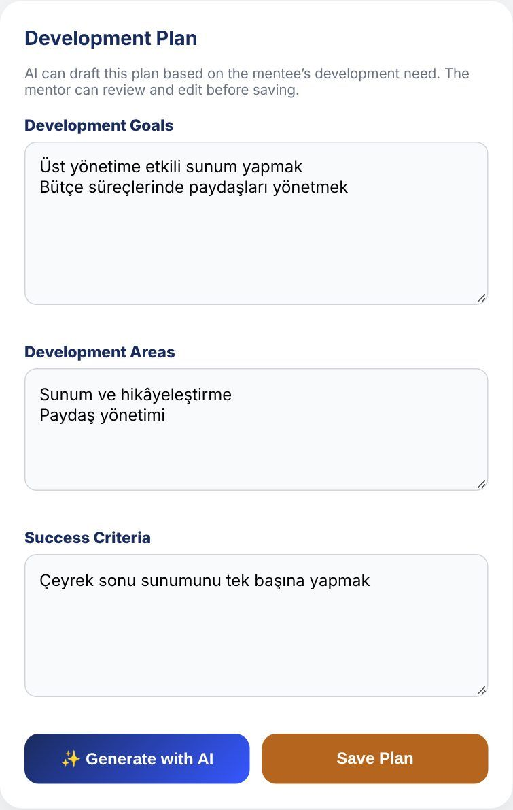
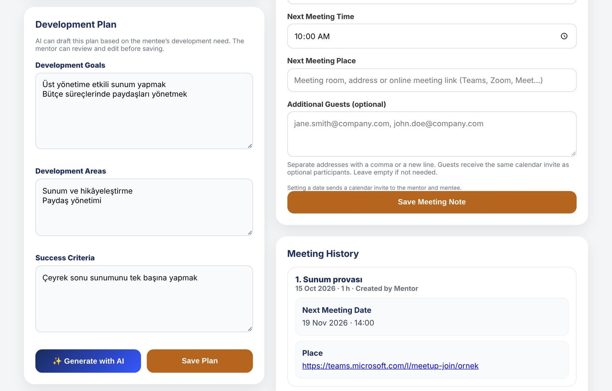
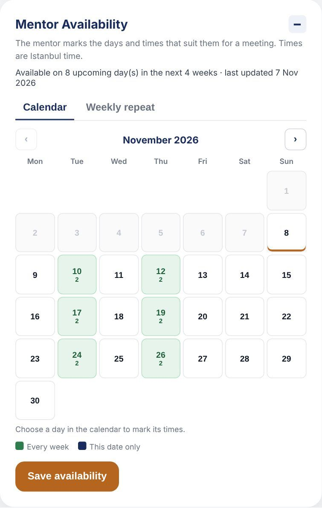

The workspace is the shared page of the mentor and the mentee. You keep your goals, meetings and plan here.
1. Opening the page
Click your own link in the match e-mail; no sign-in or password is needed. The mentor and the mentee work on the same page, but everyone has their own link.
So as not to lose the link, press Copy Workspace Link and keep it; do not share it with others.
The blue area at the top shows the programme, the status, the closing date and the days left to closing. On the closing date the page closes; its content stays readable.
Save Page as PDF saves the development plan and the meeting history.
If you wonder what to do, open the Mentoring Guide.

2. Surveys
The surveys HR sent that are not answered yet are listed here with the date they were sent (mid-term and closing surveys).
Your own survey has an Answer the survey button; press it to open the survey.
You see the other side's survey as status only; you cannot open or answer it.
Only Human Resources sees your answers. An answered survey disappears from the list.

3. Development plan
Write down together what the mentorship should achieve.
Fill in Development Goals, Development Areas and Success Criteria.
If you like, get a draft with Generate with AI (when it is on in your organisation), then edit it.
Press Save Plan.
Your name, e-mail and meeting notes are not sent to the AI; only details such as the development need go, with names hidden. Always review the AI's draft.

4. Meeting note
After every meeting, add a short note.
In Add Meeting Note, enter the date, the duration (e.g. 01:00) and a title; these three are required. Created by fills itself in from your link.
If you like, add the agenda, what was discussed and action items.
Enter the Next Meeting Date, time and Next Meeting Place: a meeting room, an address or an online meeting link (Teams, Zoom, Meet...). A link becomes clickable.
Press Save Meeting Note. If you chose a date, both of you get a calendar invitation; the place goes into the invitation's Location.
The note appears in the Meeting History. HR sees only the date and the duration of a meeting, never the content of the notes.

5. The mentor's available times
The mentor marks the times that suit them for a meeting; the mentee picks a day from these.
Open Mentor Availability with +.
Weekly repeat: hours that are the same every week. Calendar: hours for one specific day only.
Press Save availability. Times follow the time zone shown in the box (your organisation's setting).

6. Announcements and help
Announcements: announcements from HR and their attachments are shown on this page too. If there are none, it says “No announcements yet”.
Surveys: HR may send you surveys by e-mail and on this page; they take a few minutes.
If something goes wrong, write to your organisation's HR team.